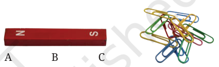
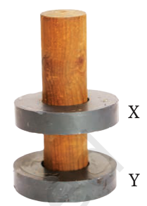
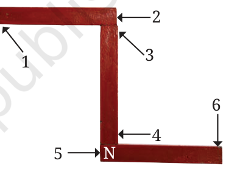

Chapter 4: Exploring Magnets
Exercise solutions
Let us enhance our learning. Try each question first, then check. Each answer links to the card that explains it.
1 Question
Fill in the blanks
(i) Unlike poles of two magnets ________ each other, whereas like poles ________ each other.
Answer attract, repel
Unlike poles (North and South) pull each other. Like poles (North-North or South-South) push each other away.
The chapter says: “unlike poles of two magnets, that is, the North pole of one magnet and the South pole of another magnet, attract each other”
Theory: Attraction and repulsion
(ii) The materials that are attracted towards a magnet are called ________.
Answer magnetic materials
Iron, nickel and cobalt are examples.
The chapter says: “The materials which are attracted towards a magnet are called magnetic materials”
(iii) The needle of a magnetic compass rests along the ________ direction.
Answer north-south
The needle is a small magnet that can rotate freely, so it rests along north-south.
The chapter says: “The needle of a magnetic compass indicates the north-south direction”
Theory: The magnetic compass
(iv) A magnet always has ________ poles.
Answer two
They are the North pole and the South pole.
The chapter says: “A magnet has two poles”
Theory: The two poles of a magnet
2 Question
State whether the following statements are True (T) or False (F).
(i) A magnet can be broken into pieces to obtain a single pole. [ ]
Answer False
Each broken piece still has a North pole and a South pole. A single pole cannot exist.
The chapter says: “It is not possible to obtain a magnet with a single pole”
Theory: The two poles of a magnet
(ii) Similar poles of a magnet repel each other. [ ]
Answer True
Similar poles means like poles, such as North and North. Like poles repel.
The chapter says: “The like poles, that is, either the North poles or the South poles of both magnets, repel each other”
Theory: Attraction and repulsion
(iii) Iron filings mostly stick in the middle of a bar magnet when it is brought near them. [ ]
Answer False
Iron filings stick mostly near the two ends (the poles). Very few stick in the middle.
The chapter says: “maximum iron filings stick near the ends of the bar magnet”
Theory: The two poles of a magnet
(iv) A freely suspended bar magnet always aligns with the north-south direction. [ ]
Answer True
This is why a hanging magnet can be used to find directions.
The chapter says: “A freely suspended magnet comes to rest along the north-south direction”
3 Question
Column I shows different positions in which one pole of a magnet is placed near that of the other. Column II indicates the resulting interaction between them for different situations. Fill in the blanks.
| Column I | Column II |
|---|---|
| N – N | ________ |
| N – ________ | Attraction |
| S – N | ________ |
| ________ – S | Repulsion |
Answer Like poles repel and unlike poles attract. The filled table is below.
| Column I | Column II |
|---|---|
| N – N | Repulsion |
| N – S | Attraction |
| S – N | Attraction |
| S – S | Repulsion |
- N – N are like poles, so they repel.
- For attraction the poles must be unlike, so the missing pole is S.
- S – N are unlike poles, so they attract.
- For repulsion the poles must be like, so the missing pole is S.
The chapter says: “like poles (North-North, South-South) repel each other while unlike poles (North-South) attract each other”
Theory: Attraction and repulsion
4 Question
Atharv performed an experiment in which he took a bar magnet and rolled it over a heap of steel U-clips (Fig. 4.15).
According to you, which of the options given in Table 4.3 is likely to be his observation?

| Position A | Position B | Position C | |
|---|---|---|---|
| (i) | 10 | 2 | 10 |
| (ii) | 10 | 10 | 2 |
| (iii) | 2 | 10 | 10 |
| (iv) | 10 | 10 | 10 |
Answer Option (i): 10 at position A, 2 at position B, 10 at position C.
- A and C are the two ends of the bar magnet. The ends are its poles.
- A magnet attracts the most at its poles, so the most clips stick at A and C.
- B is the middle of the magnet. Very few clips stick there.
The chapter says: “a very few iron filings stick at the remaining part of the magnet”
Theory: The two poles of a magnet
5 Question
Reshma bought three identical metal bars from the market. Out of these bars, two were magnets and one was just a piece of iron. How will she identify which two amongst the three could be magnets (without using any other material)?
Answer She should bring the ends of the bars near each other, two bars at a time, and look for repulsion.
- Take any two bars. Bring one end of the first bar near each end of the second bar.
- If the bars push each other away in any position, both of them are magnets.
- The iron bar is only attracted by a magnet. It is never repelled.
- So the two bars that repel each other are the magnets. The bar that is never repelled is the iron piece.
The chapter says: “a magnet can be identified by its property of repulsion”
Theory: Attraction and repulsion
6 Question
You are given a magnet which does not have the poles marked. How can you find its poles with the help of another magnet which has its poles marked?
Answer Bring the North pole of the marked magnet near one end of the unmarked magnet and watch what happens.
- If that end is pushed away (repelled), it is a North pole, because like poles repel.
- If that end is pulled closer (attracted), it is a South pole, because unlike poles attract.
- The other end of the unmarked magnet is the opposite pole.
The chapter says: “either the North poles or the South poles of both magnets, repel each other”
Theory: Attraction and repulsion
7 Question
A bar magnet has no markings to indicate its poles. How would you find out near which end its North pole is located without using another magnet?
Answer Hang the magnet freely and see which end points towards the north.
- Tie a thread to the middle of the bar magnet and hang it so that it can turn freely.
- Wait till it comes to rest. It rests along the north-south direction.
- Find the north. The Sun rises in the East, so you can work out where North is.
- The end that points towards the north is the North pole of the magnet.
The chapter says: “The end of the magnet that points towards north direction is called the North-seeking pole”
8 Question
If the earth is itself a magnet, can you guess the poles of earth’s magnet by looking at the direction of the magnetic compass?
Answer Yes. The South pole of Earth's magnet is near the Earth's north, and its North pole is near the Earth's south.
- The North pole of a compass needle points towards the Earth's north.
- Unlike poles attract. So the needle's North pole must be pulled by a South pole.
- So the South pole of Earth's magnet lies towards the north, and its North pole lies towards the south.
The chapter says: “our Earth itself behaves like a giant magnet”
Theory: A hanging magnet shows north and southAttraction and repulsion
9 Question
While a mechanic was repairing a gadget using a screw driver, the steel screws kept falling down. Suggest a way to solve the problem of the mechanic on the basis of what you have learnt in this chapter.
Answer (sample) Make the tip of the screwdriver a magnet, so that the steel screws stick to it.
- Move one pole of a bar magnet along the screwdriver from one end to the other.
- Lift the magnet, bring it back to the same end and repeat 30 to 40 times.
- The screwdriver becomes a magnet, just as the iron needle did in Activity 4.4.
- Steel screws are attracted to it, so they do not fall down.
The chapter says: “If the pins or iron filings get attracted to the needle, then that means that the needle has become a magnet”
Theory: The magnetic compassMagnetic and non-magnetic materials
10 Question
Two ring magnets X and Y are arranged as shown in Fig. 4.16. It is observed that the magnet X does not move down further. What could be the possible reason? Suggest a way to bring the magnet X in contact with magnet Y, without pushing either of the magnets.

Answer The like poles of X and Y face each other, so the magnets repel. To bring them together, turn one magnet upside down.
- Magnet X stays up because Y pushes it away. This happens when like poles face each other.
- Take out magnet X, turn it upside down and put it back.
- Now unlike poles face each other. They attract, and X moves down and touches Y.
The chapter says: “like poles (North-North, South-South) repel each other”
Theory: Attraction and repulsion
11 Question
Three magnets are arranged on a table in the form of the shape shown in Fig. 4.17. What is the polarity, N or S, at the ends 1, 2, 3, 4 and 6 of the magnets? Polarity of one end (5) is given for you.

Answer End 1 is N, end 2 is S, end 3 is N, end 4 is S and end 6 is S.
| End | 1 | 2 | 3 | 4 | 5 | 6 |
|---|---|---|---|---|---|---|
| Polarity | N | S | N | S | N (given) | S |
- The magnets stay joined, so the ends that touch must be unlike poles.
- End 5 is N. End 6 is the other end of the same magnet, so 6 is S.
- End 4 touches end 5 (N), so 4 is S. End 3 is the other end of that magnet, so 3 is N.
- End 2 touches end 3 (N), so 2 is S. End 1 is the other end of that magnet, so 1 is N.
The chapter says: “unlike poles (North-South) attract each other”